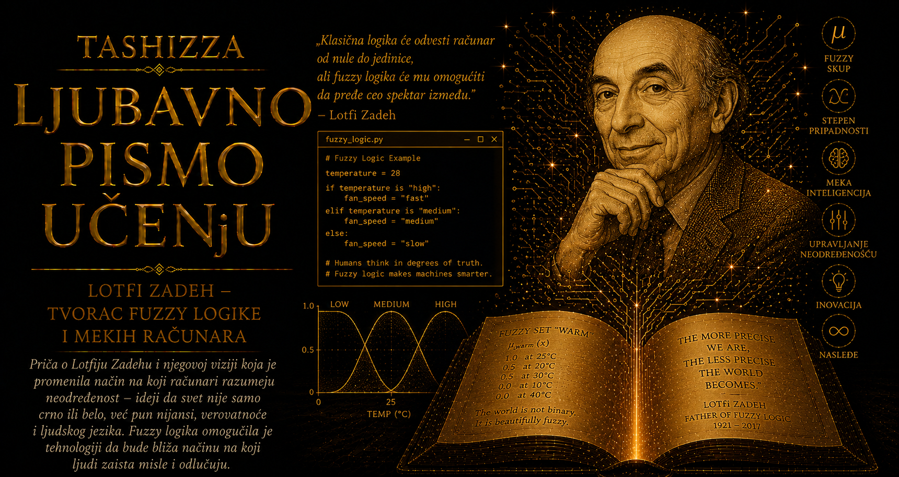

Ljubavno pismo učenju

Lotfi Zadeh je čitavim životom pripadao različitim jezicima, kulturama i naučnim disciplinama, pa je njegova biografija gotovo neobično saglasna sa idejom po kojoj će postati poznat. Rođen je 4. februara 1921. godine u Bakuu kao Lotfi Aliaskerzade, u porodici čije se poreklo nije moglo zatvoriti u jednu jednostavnu odrednicu. Otac Rahim bio je iranski novinar azerbejdžanskog porekla i dopisnik iz Sovjetskog Saveza, dok je majka Fanja Korenman, Jevrejka poreklom iz Odese, radila kao pedijatar. U roditeljskom domu susretali su se novinarstvo i medicina, Kavkaz i Iran, muslimansko i jevrejsko nasleđe, javna reč i naučna preciznost.
Baku njegovog detinjstva bio je kosmopolitski grad na obali Kaspijskog mora, oblikovan naftom, trgovinom, industrijom, revolucijom i prisustvom različitih naroda. Kada su početkom tridesetih godina političke prilike u Sovjetskom Savezu postale sve opasnije za strance i nezavisne dopisnike, porodica je napustila grad i 1931. godine preselila se u Teheran. Desetogodišnji Lotfi tako je rano upoznao iskustvo promene države, jezika i društvenog poretka, noseći iz Bakua uspomene koje će ostati važan deo njegove ličnosti.
U Teheranu je pohađao Američki koledž, školu u kojoj se nastava odvijala na engleskom jeziku, pa se njegovom rusko-azerbejdžanskom detinjstvu i persijskom okruženju pridružio još jedan kulturni sloj. Pokazao je izuzetnu nadarenost za matematiku i tehničke nauke, a na državnom prijemnom ispitu za univerzitet zauzeo je drugo mesto u zemlji. Elektrotehniku je završio na Univerzitetu u Teheranu 1942. godine, u času kada je Drugi svetski rat zahvatio i Iran i pretvorio ga u važan logistički prostor između Sovjetskog Saveza i zapadnih saveznika.
Rat je otežavao putovanja, ali mu je istovremeno otvorio neočekivan put prema daljem školovanju. Radeći sa ocem na poslovima povezanim sa snabdevanjem američkih vojnih jedinica, prikupio je sredstva potrebna za odlazak u Sjedinjene Države. Put je vodio preko Kaira i bio ispunjen čekanjem, promenama planova i neizvesnošću ratnog saobraćaja. U Ameriku je stigao 1944. godine kao mladi inženjer koji je već naučio da granice na karti mogu promeniti čovekov život mnogo brže nego što se menjaju njegove uspomene i osećaj pripadnosti.
Na Masačusetskom institutu za tehnologiju stekao je 1946. godine magistarsku diplomu iz elektrotehnike, nakon čega je prešao na Univerzitet Kolumbija u Njujorku. Tamo je završio doktorat, predavao i istraživao vremenski promenljive električne mreže, teoriju sistema, uzorkovane sisteme i matematičke metode upravljanja. Sa Džonom Ragazinijem radio je na oblastima povezanim sa predviđanjem i z-transformacijom, a 1957. godine postao je redovni profesor. Njegov kasniji zahtev da nauka ozbiljno shvati nepreciznost potekao je iz rada čoveka koji je izuzetno dobro poznavao najstrože jezike matematike i elektrotehnike.
Godine 1959. prešao je na Univerzitet Kalifornije u Berkliju, u sredinu koja je upravo postajala jedno od središta računarske i elektronske revolucije. Bavio se linearnim sistemima, automatima i teorijom upravljanja, a sa Čarlsom Desoerom objavio značajnu knjigu o pristupu prostoru stanja. Kao rukovodilac odseka od 1963. godine prepoznao je da računarstvo prerasta položaj pomoćne oblasti unutar elektrotehnike. Tokom njegovog mandata odsek je proširio naziv i usmerenje na elektrotehniku i računarske nauke, čime je Zadeh pokazao sposobnost da institucionalnu promenu uoči dok je drugima još izgledala kao neizvesna budućnost.
Upravo na Berkliju sazrevalo je njegovo nezadovoljstvo načinom na koji formalne teorije opisuju složene sisteme. Matematički modeli bili su izuzetno uspešni kada su veličine mogle precizno da se izmere i odnosi jasno odrede, ali su postajali kruti kada su u problem ulazili ljudski jezik, procena, ponašanje i promenljivo okruženje. Zadeh je primećivao da inženjer može tačno izmeriti temperaturu, dok pojmovi „toplo”, „prijatno” i „veoma hladno” zadržavaju postepene i kontekstualne granice. Dugotrajno razmišljanje o tom raskoraku dovelo ga je do rada „Fuzzy Sets”, objavljenog 1965. godine.
Otpor koji je usledio bio je snažan. Sama engleska reč fuzzy mnogim naučnicima je zvučala kao poziv na neurednost i odustajanje od rigoroznosti, dok su pojedini kritičari smatrali da se svi relevantni problemi već mogu rešavati teorijom verovatnoće. Zadeh je morao uporno da objašnjava razliku između neizvesnog ishoda i nejasno omeđenog značenja. Akademska osporavanja su ga pogađala, ali ga nisu navela da napusti ideju. Savremenici su u njemu zapažali neobičan spoj blagosti i istrajnosti: govorio je tiho, ophodio se učtivo i izbegavao teatralne sukobe, a ipak je odbijao da povuče misao čiju je vrednost jasno video.
Njegove radne navike nosile su isti spoj strpljenja i upornosti. Više je voleo olovku nego nalivpero jer je napisano mogao da izbriše, popravi i preciznije oblikuje. Kancelarija mu je bila ispunjena radovima, prepisima, beleškama i člancima pristiglim iz čitavog sveta. Čuvao je ogromnu dokumentaciju o oblasti koju je pokrenuo i pratio njeno širenje kroz matematiku, inženjerstvo i računarsku inteligenciju. Formalno je postao profesor emeritus 1991. godine, ali je nastavio da dolazi na univerzitet, piše, predaje i putuje na konferencije gotovo do kraja života.
Posebnu, gotovo simboličnu zanimljivost predstavlja njegova ljubav prema fotografiji. Zadeh je naročito voleo crno-bele portrete i fotografisao kolege, prijatelje i javne ličnosti, među kojima su bili Hari Truman i Ričard Nikson. U mediju zasnovanom na crnom i belom pažnju su mu privlačili upravo sivi tonovi, svetlost i senka koje licu daju dubinu. Naučnik koji je matematici otvorio prostor između nule i jedinice pronalazio je umetničko zadovoljstvo u istančanim prelazima između dve krajnje boje.
U privatnom životu važan oslonac bila je njegova supruga Fej, sa kojom je proveo decenije putovanja, univerzitetskog rada i međunarodnih susreta. Ona je kasnije napisala knjigu o životu sa tvorcem fazi logike, sačuvavši ličnu sliku čoveka iza akademske slave. Imali su ćerku Stelu i sina Normana. Porodicu su pogodili teški gubici kada je Stela umrla 2006. godine, a Fej početkom 2017. Lotfi je suprugu nadživeo svega nekoliko meseci.
Njegova neumorna radoznalost širila je početnu ideju tokom narednih decenija. Razvijao je jezičke promenljive, približno zaključivanje, teoriju mogućnosti, granulaciju informacija, meko računarstvo i računanje rečima. Posebno ga je zaokupljalo pitanje kako računaru omogućiti da obrađuje izraze kojima se ljudi svakodnevno služe, poput „prilično daleko”, „veoma pouzdano” ili „otprilike dva sata”. Nije očekivao da jedna teorija obuhvati sve oblike inteligencije, ali je verovao da mašine moraju naučiti da postupaju sa informacijama koje ne dolaze u obliku savršeno preciznih brojeva.
Prve velike industrijske potvrde njegovih zamisli stigle su iz Japana, gde su inženjeri tokom sedamdesetih i osamdesetih godina pokazali izrazitu spremnost da ideju proveravaju kroz uređaje i upravljačke sisteme. Dok su se u delu američke akademske zajednice još vodile rasprave o teorijskoj opravdanosti fazi logike, njene primene ulazile su u industrijska postrojenja, vozove, kamere, klima-uređaje, automobile i kućne aparate. Zadeh je tako doživeo da zamisao nekada dočekana podsmehom postane deo tehnološke svakodnevice miliona ljudi.
Priznanja su naposletku stizala iz čitavog sveta. Dobio je IEEE Medalju časti, Hamingovu medalju, Hondinu nagradu, brojna članstva u akademijama i veliki broj počasnih doktorata. Slava ga nije pretvorila u nepristupačnu akademsku figuru. Ostao je poznat kao pažljiv sagovornik sposoban da veoma složen problem približi jednostavnom slikom, bez potcenjivanja slušaoca i bez svođenja ideje na praznu dosetku.
Različite zemlje smatrale su ga delom sopstvene naučne istorije. Azerbejdžan je u njemu video velikog sina Bakua, Iran naučnika koji je tamo odrastao i stekao prvo visoko obrazovanje, a Sjedinjene Države jednog od svojih najuticajnijih profesora elektrotehnike i računarskih nauka. Zadeh je sopstveni identitet opisivao rečenicom dovoljno širokom da obuhvati različite pripadnosti: bio je američki, matematički orijentisan elektroinženjer iranskog porekla, rođen u Rusiji. Njegov život pokazivao je da složen opis može biti precizniji od jedne uredne etikete.
Umro je 6. septembra 2017. godine u svom domu u Berkliju, u devedeset sedmoj godini. Prema njegovoj želji, sahranjen je u Aleji časti u Bakuu, gradu u kojem je započeo njegov dugi put. U tom povratku sabrali su se Baku, Teheran, Kembridž, Njujork i Berkli, jezici koje je govorio, discipline koje je povezivao i generacije istraživača koje je ohrabrio da preispituju granice prihvaćenih sistema.
Lotfi Zadeh je svojom biografijom i svojim radom branio pravo složenosti da ostane složena. Bio je tih čovek koji je izdržao glasne sumnje, vrhunski poznavalac precizne matematike koji je upozoravao na opasnost preterane preciznosti i kosmopolita čiji se identitet oblikovao kroz više stvarnih pripadnosti. Njegova hrabrost nije počivala na bučnoj sigurnosti, nego na sposobnosti da dugo ostane uz pitanje koje drugi još nisu smatrali vrednim.
Za knjigu posvećenu učenju njegova životna priča nosi dragocenu poruku. Znanje zahteva disciplinu, ali i spremnost da se prepozna trenutak u kojem stari jezik više ne opisuje dovoljno dobro ono što vidimo. Zadeh je umeo da poštuje matematičku strogost, a da joj istovremeno postavi granicu. Između nule i jedinice pronašao je prostor u kojem se kreće najveći deo ljudskog iskustva, a između pripadanja i nepripadanja sopstveni život sastavljen od mnogih gradova, jezika i kultura. Njegovo nasleđe zato pripada i nauci i intelektualnoj skromnosti: jasno misliti čak i onda kada svet odbija da bude jednostavan.